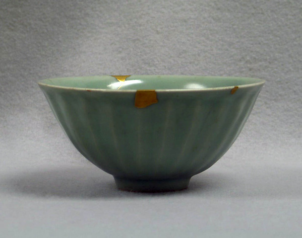
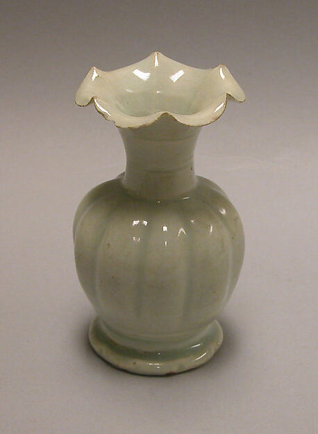
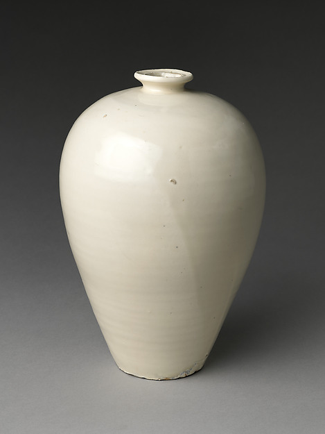

汝窑：天青色的终极
汝窑烧造时间极短，约在北宋末年仅二十余年（1086-1106年），传世品不足百件。天青釉色是汝窑的标志——介于蓝与绿之间的微妙色调，被宋徽宗以"雨过天青云破处，这般颜色做将来"一语定格。
汝窑器多素面无纹，以釉色和器型取胜。其釉面有细密开片如蝉翼，底足多有三或五枚细小支钉痕——这是汝窑独有的"芝麻钉"特征。台北故宫藏有汝窑水仙盆、莲花式温碗等旷世珍品。
一抹天青，千年绝响。

钧窑：窑变的诗意
钧窑以窑变釉色著称，在还原焰中铜元素呈现出从玫瑰紫到海棠红的丰富变化。每一件钧窑器都是独一无二的——入窑前无法预知出窑后的色彩。这种"偶然之美"在宋代艺术哲学中具有特殊地位。
钧窑器底多刻有数字，从"一"到"十"，代表尺寸大小。数字越小器型越大。"蚯蚓走泥纹"是钧窑的典型特征——釉层在烧制过程中自然流动形成的纹理。钧窑花盆是徽宗"艮岳"的遗物，见证了北宋末年皇家园林的奢华。
入窑一色，出窑万彩。

官窑：帝国的审美意志
南宋官窑是皇室直接控制的窑场，产品仅供宫廷使用。官窑瓷器的特征是"紫口铁足"——因胎体含铁量高，口沿釉薄处露出紫黑色胎骨，底足无釉处则呈铁褐色。釉面肥厚，有大开片纹理，俗称"冰裂纹"。
官窑器型多仿青铜器和玉器——琮式瓶、贯耳瓶、簋式炉等——这是南宋朝廷"法古"思想的直接体现。在偏安江南的政治语境下，仿古器物承载了文化正统性的象征意义。
紫口铁足，冰裂纹间，藏着一整个王朝的尊严。

哥窑与龙泉：金丝铁线的传奇
哥窑的特征是"金丝铁线"——釉面大开片纹理粗黑如铁线，小开片细密金黄如金丝。这种开片效果是通过胎釉膨胀系数差异在冷却时自然形成的，再以墨汁或茶叶水浸染着色。
龙泉窑则是宋代青瓷的另一座高峰。南宋龙泉创烧的粉青和梅子青釉，将青瓷釉色推向了温润如玉的极致。龙泉青瓷大量外销，从日本到东非，成为世界认识中国陶瓷的窗口。
金丝铁线是时间的刻痕，梅子青是江南的魂魄。